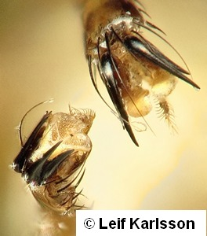
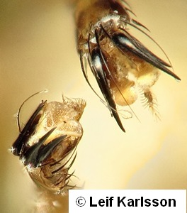
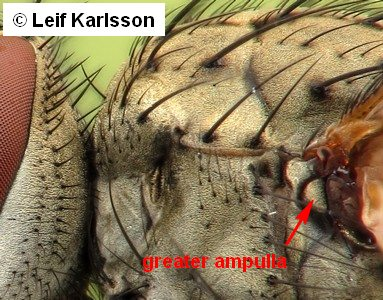
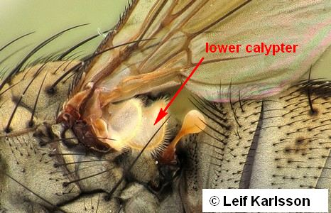
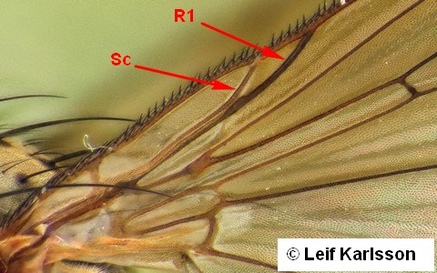
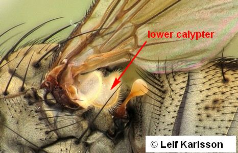
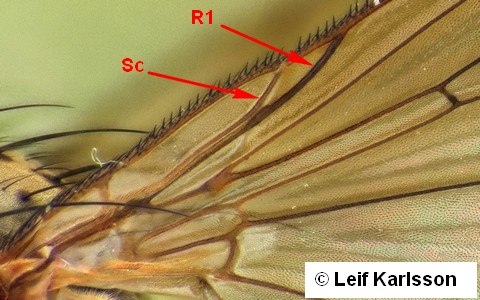
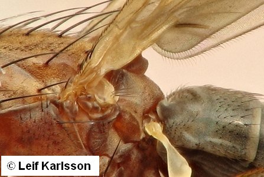

Key to subsections of Schizophora
1.
- Coxae of middle and mostly of hind legs widely apart. Tarsal claws strongly recurved and toothed. Ectoparasites of birds and mammals.
 

Calyptratae
Hippoboscoidea
- Coxae of middle and hind legs not distinctly separated. Tarsal claws simple.
2
- Greater ampulla present as a distinct bulbous swelling slightly below and in front of wing in- sertion. Pedicel dorsally always with a distinct linear seam. Lower calypter (thoracic squama) usually well-developed. Vein Sc more or less complete and separate from R1. In most genera and species one or more vibrissae as well as incurved lower fronto-orbital bristles present.
 

Calyptratae
- Greater ampulla not markedly developed. If better developed, pedicel without a dorsal linear seam (it is so in a majority of the families which run here), and/or lower calypter (thoracic squama) small or even vestigial. Combination of other characteristics different.

Acalyptratae